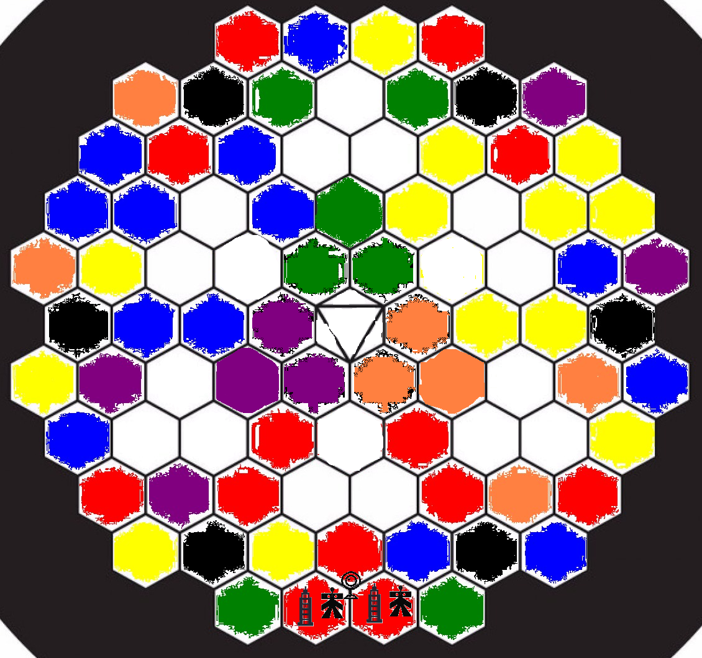

Exoplanet Geographical Information System
Area control with objectives and light engine building. Rune Wars (4-turn cycle, 8 card action hand) meets Terra Mystica (hexes with terraforming) meets Scythe (upgrades, light engine building).
You are AIs owned by rival surveying corporations collecting geospatial data on an inhospitable exoplanet.
You'll need to adapt to the terrain, harvest resources, create more factories and mechs, and deploy scanners to retrieve the most complete picture of the planet to sell to colonists or mining companies.
You win by scoring the most points. The only thing worth points is the number of unique hexes scanned.
Scan the highest number of hexes before the game ends.
You start with two factories, two hexes, two mechs, 1 scanner, and 8 alloy. Each faction starts with the middle two hexes of their home row, with a mech and factory on each one, with matching stand colors. Each faction also gets a scanner touching their two starting hexes and the hex above them.
For primaries, that means two mechs and factories of that primary color. For secondaries, that means a mech and factory of each of their neighboring primary colors.
See the setup diagram, though it only shows the mechs, factories, and scanner for the red faction.

Most of the planet is inhospitable to default mechs - you'll need to modifications to traverse certain areas, and some areas will need more than 1. Red modifications add electronic shielding for continued functionality in highly radioactive / electromagnetically active hexes. Blue modifications are additives to inhibit microbe growth and discourage fauna interaction. Yellow modifications are paints and greases to prevent chemical corrosion.
Hexes have color-coded requirements for occupation:
TBD - expansion lol
You have scanners, mechs, factories in your color. There are stands of every color. Everyone can gather alloy. There are, in some vague sense, objective tokens. There are overheat tokens. There are no piece limits.
Placed with the scan action to scan 1 or more hexes. Scanners are not units, do not go on hexes, and cannot be destroyed. Placed without stand. Cannot be moved or destroyed.
The only resource. Quarried from hexes you control. Goes into your personal supply; does not touch the board.
Mechs and factories are units and go on hexes. Any unit controls a hex. Each unit has a stand denoting modifications.
Stands are just bases for pieces, and do nothing on their own.
Mech stands show the modifications the mech has undergone, and thus, where the mech can move.
Factory stands show the modified mechs an expanded factory can produce.
By default, mechs have 1 move, 1 attack, and 1 defense. See movement or combat for details.
Can be expanded for extra defense and mech spawning. Can be stolen (damaged) in combat. Factory stands determine what colors a mech can spawn with - not where a factory can exist.
Factory number of expansions is the number of colors - 0 expansions: white, 1: primary, 2: secondary, 3: black. Factories spawn as level 2 (1 expansion). Factories stolen from enemies become unexpanded (level 1 / 0 expansions).
See Manufacture to details on mech production.
Simultaneous declaration - reveal action cards at the same time. Cards are mostly simultaneous action (with the exception of combat) , but if someone requests, other cards can be ordered as well.
Days are 4 sets of turns - morning, noon, evening, and night. Cards played for the day cannot be reused until the following day.
Pick up overheat tokens. Pick up all cards played yesterday.
You have +1 upgrade for cards played at noon. There is no benefit to +1 upgrade on maxed out cards?
Nothing?
You have -1 upgrade for cards played at night. There is no detriment to -1 upgrade on base, non-upgraded cards.
Think Rune Wars, but no supremacy bonuses, only upgrades.
Cards can be upgraded for better effect. Cards start with zero upgrades. On cards with multiple actions (Develop and Streamline) you may take any number of the actions in order.
Cards are technically resolved in numbered order, though outside of combat, most cards can be resolved simultaneously. Ties are resolved by completed objectives, then unused alloy, then bidding alloy (say a number, next person must bid higher or lose the tie). Tie winner chooses who goes first.
3 - # Upgrades alloy;8 - # Upgrades alloy to create one factory one expansion;# Upgrades defense bonus this turn on hexes with factories;6 - 2 * # Upgrades alloy (enemy territories can only be cleaned).Upgrade cap: 3
Choose 1 + # Upgrades starting hexes, and up to 1 + # Upgrades adjacent controlled or empty destination hexes.
Move any number of mechs from starting hexes to destination hexes.
Each mech cannot move more than 1 hex this way.
Upgrade cap: 4
Place an overheat token on a hex. Move mechs to that hex.
Can only move through controlled or empty territories, and still have to match colors.
Upgrade cap: 3
Place an overheat token on a hex.
Move mechs to that hex from any number of adjacent hexes.
If combat, # Upgrades bonus combat power.
Upgrade cap: 4
Harvest based on controlled hexes with # Upgrades bonus alloys.
Upgrade cap: 3
With any number of factories: spend alloy to deploy mechs, with # Upgrades extra white mechs (can be modified as you spawn them, but you must pay for the modifications)
Factories can only spawn a number of mechs equal to their level.
Mechs cost 2, plus one per modification.
Mechs of your faction color are 1 cheaper.
The mech's stand is any color the base could produce that can stand on the hex.
Examples:
Upgrade cap: 3
Can only be played at morning.
Complete one new quest (must currently meet requirements) and upgrade a card X times based on # Upgrades;
0: once
Upgrade cap: 2
With mech: Create a scanner between hexes you control.
Scanners can be placed between two hexes (on a line), or between 3 hexes (on a corner). Scanners can also be placed off the edge of the board if you really want.
Scanner costs 6 alloy plus 1 per required mod, (with a 1 alloy discount for every scanner already present?). Scanner requires:
Scanners do not need a stand: they cannot be moved or destroyed once placed, regardless of terraform actions, hex control, or combat. Scanners can be co-located.
(Level 4 does not mean you can airdrop a line scanner from anywhere; you still need an adjacent mech to deploy.)
Upgrade cap: 5
By default, mechs have a speed of 1, meaning they can only move from a hex to an adjacent hex. No other pieces can be moved.
Upgrading the Explore action allow you to move mechs at speed 2. Mechs can only move through friendly or empty hexes that they can stand in.
Upgrading the Explore action again allows you to blink between hexes of the same color that are less than 2 hexes apart. Tunneling between these hexes counts allows you to to bypass enemy or inhospitable hexes. Tunneling between these hexes treats them as adjacent, meaning you could move up to 4 hexes away.
Interstellar law prohibits sabotaging competing efforts, but short of destroying a company's scanners, no one will be able to prove anything. This means your mechs aren't designed for combat, but neither are anyone else's. Your best plan is mutually assured destruction: overload your power source and explode your units to take out theirs. Factories will enter lockdown during combat - you'll have to spend some explosive strength to damage them enough to get in and take control.
Combat is just 1:1 - attacker sacrifices X units to destroy X defender units. Each factory expansion counts as a unit (each mech counts as one unit regardless of modifications). If you successfully invade a hex with a factory, destroy your opponent's factory and place an unexpanded factory (white stand) on the hex.
You can choose to attack with fewer units if you want to weaken your opponent's forces, though you won't gain control of the hex. A tie means the territory becomes unoccupied - any factories are completely destroyed. Remember to remove the overheat token after any attack where you don't control the hex.
Significant effort can cause mechs to overheat. You'll need to let them idle before they can be used.
Mark target hexes for your Explore and Annex actions with an overheat token. After your turn has completed, if you don't control the hex, remove the overheat token you placed.
All mechs in a hex marked with an overheat token are overheated. Overheated mechs cannot leave and cannot perform any "With mech" action (Develop, Coordinate, Explore, Annex, and Scan). Moving into an overheated area is allowed - you may attack or reinfoce areas with overheated mechs.
Remove all overheat tokens from the board at the start of each morning.
Your technology wasn't designed with this particular planet's environment in mind. Gather more training data to make actions more efficient.
Completing objectives can only be done via the Streamline action, which will let you immediately upgrade a card. See the list below.
Every action is ultimately software. Deploying patches after release is standard procedure.
Upgrades are per card.
Upgrading involves grabbing the higher number card of that name adding a tally to your card and placing an objective token of your color on that objective to mark it off.
You may upgrade any card, regardless of whether it has been played today. Upgrading the currently played card does not change your current action.
There are a total of 27 possible upgrades, but only 17 objectives.
When objective tokens run out, game ends that night.
Game ends on the night of the day that we run out of objective markers? Or someone completes 10 objectives? How much? No idea - 2-3: 8/p, 4: 7/p, 5-6: 6/p ^ These are probably too long.
Surveying is zero-sum - miners and colonizers will buy from whomever has the most complete data set. The winner is the faction with the most hex data uploaded back to the Core Worlds.
Each unique hex covered by a scanner is worth 1 point. Ties are broken by number of upgrades.
Should anything to do with your color be easier? Unit discount, extra harvest, farther teleport?
Movement is super hard - should the map be more biome-based with regions of similar color?
I like the 4 turn round setup. I like the color requirements to expand, and the generalization penalty of more expensive units since they don't attack better. I like terraforming to make defending / expanding easier. I like teleporting / tunneling color to color to skip over terraformed defenses and reach the center. I like the flavor concept of mechs plus mods to enter hexes hostile in different ways. I like the base concept of combat and area control. I like deterministic combat and MAD. I like that permanent area control isn't the goal.
I dislike 8 different actions and having to explain how to pick them up - complexity penalty.
I dislike that more hostile hexes aren't more rewarding somehow. I dislike that your faction color doesn't matter somehow. I dislike that combat doesn't favor defenders.
I want a color-based area control game engine-building game where area control isn't the win condition.
I like the trophy placement win condition. I like the four turn days / years with different effects.
I don't know how to structure actions to be balanced. I don't know how to make an engine builder.
I need to decide what the "engine" component is. What drives the game? I want it to be the board, not a deck to build or something.
so how can you build an engine with only one material type you gather from the board and objectives you complete?
I don't want to have multiple material types - that's too much like scythe or rune wars.
Drop into partially completed game - each player has different upgrades, starting alloys, setup, etc.